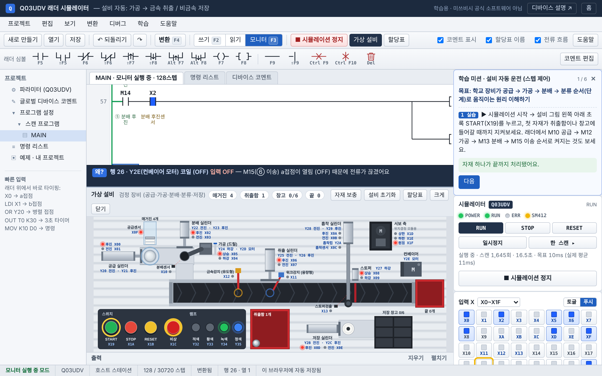

설치 없이 F5·F6·F7 단축키로 래더를 입력하고, F4로 변환한 다음 가상 Q03UDV CPU에서 실행해요. 공급 실린더·컨베이어·센서가 달린 가상 실습 장비가 내가 짠 래더대로 움직여요.

학교에서 쓰는 GX Works2와 같은 순서로 연습할 수 있게 만들었어요. 래더 작성 → 변환 → PLC 쓰기 → 모니터.
GX Works2와 같은 단축키예요. 래더 위에서 X0, LDI X1, OUT T0 K30처럼 바로 타이핑해도 들어가요.
F4로 변환하면 끊긴 선이나 출력 없는 회로를 찾아주고, 래더를 LD·AND·OR·ANB·ORB·MPS 니모닉으로 바꿔 보여줘요.
X 스위치로 입력을 넣고 Y 램프로 결과를 봐요. 타이머·카운터 현재값, D 레지스터 값도 실시간으로 바뀌어요.
작업은 브라우저에 자동 저장되고, 예제를 열거나 새로 만들 때 하던 작업은 자동 백업돼요(최근 5개). .json 파일에는 설비 I/O 할당까지 같이 저장돼요.
학교 실습 장비처럼 매거진, 공급 실린더, 컨베이어, 근접센서, 스토퍼, 배출 실린더가 있어요. 래더의 Y 출력이 실린더와 모터를 움직이고, 센서는 X 입력으로 래더에 들어가요.
Y20 공급 실린더, Y21 컨베이어, Y22 스토퍼, Y23 배출 실린더, Y24~Y26 램프.
리드 스위치(실린더 전진·후진), 매거진 감지, 용량형(모든 자재)·유도형(금속만) 근접센서, 광센서. 번호는 I/O 할당에서 학교 장비에 맞게 바꿀 수 있어요.
설비 자동 예제를 열고 ▶ 시뮬레이션 시작 → 설비 그림의 초록 PB1. 금속은 배출함으로, 플라스틱은 컨베이어 끝까지 가요. 빨강 PB3을 누르면 모든 동작이 그 자리에서 멈추고, 다시 PB1을 누르면 하던 단계부터 이어서 움직여요.
미션 카드가 단계마다 할 일을 알려주고, 시뮬레이션 결과를 보고 성공했는지 자동으로 체크해요. 순서는 목표 → 결과 예상 → 직접 수정 → 결과 확인 → 이유 정리예요.
Y20 병렬 접점을 지우면 어떻게 될지 예상하고, 직접 지워서 확인한 뒤 다시 고쳐요.
K30을 K50으로 바꾸면 몇 초일지, 중간에 멈추면 현재값이 어떻게 되는지 확인해요.
버튼을 계속 누르고 있으면 몇 번 셀지 예상하고, 설정값을 바꿔 봐요.
모니터 중 커서를 둔 줄의 출력이 왜 켜졌는지, 어느 접점 때문에 꺼졌는지 문장으로 알려줘요.
X0 ON → Y20 ON → X0 OFF처럼 바뀐 순서가 쌓이고, 일시정지한 뒤 한 스캔씩 실행해 볼 수 있어요.
학습 메뉴에서 실제 PLC와 다른 점을 확인하고, 예제·문법·설비 동작 89개 항목을 자동으로 검사할 수 있어요.
처음이면 자기유지 회로부터 만들어 보세요. 기동 버튼(X0)을 한 번 누르면 모터(Y20)가 계속 돌고, 정지 버튼(X1)을 누르면 멈추는 회로예요.
시뮬레이터에서 X0 Enter → LDI X1 Enter → OUT Y20 Enter. 아래 줄 첫 칸에서 Shift+F5 누르고 Y20 Enter.
F4를 눌러요. 회색이던 부분이 흰색으로 바뀌고 왼쪽에 스텝 번호가 붙으면 성공이에요. 오류는 아래 출력 창에 나와요.
▶ 시뮬레이션 시작을 누르고 오른쪽 X0 버튼을 눌렀다 떼 보세요. Y20 램프가 켜지고 래더 접점이 파랗게 바뀌어요.
0LDX0 1ORY20 2ANIX1 3OUTY20 4END
누르면 시뮬레이터에 바로 열려요. 하던 작업이 있으면 자동으로 백업해 둬서, 프로젝트 → 열기에서 다시 복구할 수 있어요.
GX Works2와 같은 키예요. 이 사이트에서는 F5(새로고침) 같은 브라우저 키가 래더 입력용으로 바뀌어요.
| 키 | 입력 |
|---|---|
| F5 / Shift+F5 | a접점 / a접점 OR(병렬) |
| F6 / Shift+F6 | b접점 / b접점 OR |
| Shift+F7 / Shift+F8 | 상승 펄스 / 하강 펄스 |
| F7 / F8 | 코일 / 응용 명령 |
| F9 / Shift+F9 | 가로선 / 세로선 (커서 왼쪽, 아래로) |
| 키 | 동작 |
|---|---|
| F4 | 변환 |
| F2 / F3 | 쓰기 모드 / 모니터 모드 |
| Enter / Del | 요소 수정 / 삭제 |
| Shift+Ins / Shift+Del | 행 삽입 / 행 삭제 |
| Ctrl+Z / Ctrl+S | 되돌리기 / 저장 |